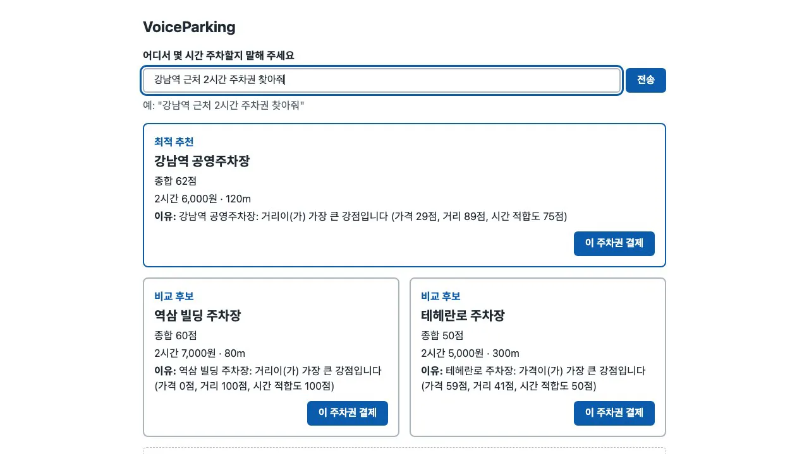
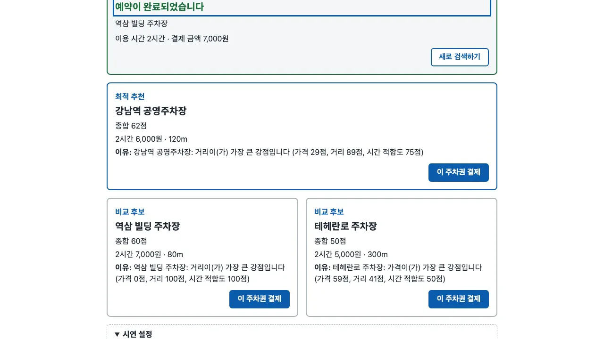
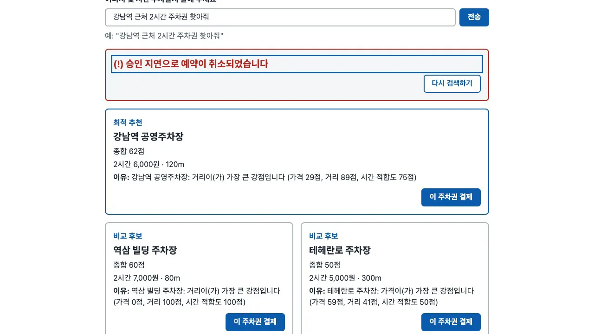

모든 유닛이 끝나면 Build and Test 단계에서 전체를 한 번에 시험합니다. 실제 서비스를 띄워 연동도 확인합니다. 화면은 사람이 브라우저에서 직접 확인합니다. 목표마다 Met·Not Met·Unverified로 판정한 문서를 사람이 승인하면 계획이 끝납니다.
이 장의 산출물 · GitHub
실습을 실제로 실행한 결과가 공개 저장소 uengine-oss/tutorial-aidlc-handson의 level2-classic/ 폴더에 있습니다. 본문의 파일 이름을 눌러도 해당 파일이 열립니다.
construction/build-and-test/— 빌드 안내·시험 결과·판정표·추적scripts/— 실행·스모크·전체 검증 스크립트
무엇을 · 왜#
| 순서 | 하는 일 | 산출물 | 사람 |
|---|---|---|---|
| 전체 시험 | 승인된 검증 명령과 u5 시험을 다시 실행 | test-results.md |
명령 실행 허가 |
| 실제 연동 | 서비스를 띄워 추천 → 결제 → 예약 확정을 직접 호출, 화면 프록시를 거친 스모크 | test-results.md, .local-run/smoke.txt |
명령 실행 허가 |
| 브라우저 확인 | 실시간 갱신, 1초 목표, 180초 취소 표시를 실제 화면에서 확인 | test-results.md |
사람이 직접 |
| 판정 | 목표마다 기대값·실제값·증거·판정 | build-and-test-summary.md |
승인 |
| 추적 | 요구사항이 어느 유닛에서 구현됐는지 | cross-unit-traceability.md |
따로 멈추지 않음 |
각 유닛은 이미 유닛 시험을 통과했습니다. 마지막에는 시험을 다시 묶어서 실행하고 실제 프로세스끼리 연결해 봅니다. 시험에서는 보이지 않던 문제(포트 충돌, 어색한 문구)가 이 단계에서 드러납니다.
따라 하기: 앱 실행#
-
실습 폴더(
lab/aidlc-voice-parking-classic)에서 처음 한 번 준비합니다.scripts/run-local.sh --prepare -
네 서비스를 띄웁니다. u1 → u2 → u3 → u4 순서로 준비 상태를 확인합니다. 모두 통과하면 접속 주소를 알려 줍니다. Ctrl-C로 모두 정리합니다. 웹훅 비밀 값은 실행할 때마다 새로 만들어 u3에만 전달합니다.
scripts/run-local.sh -
브라우저에서
http://127.0.0.1:5173을 열고 "강남역 근처 2시간 주차권 찾아줘"를 입력합니다. 최적 추천 1장과 비교 후보 2장이 점수·이유와 함께 나옵니다.
추천 카드 -
아래 「시연 설정」에서 모의 결제 결과를 고르고 카드의 「이 주차권 결제」를 누릅니다. 승인을 고르면 새로 고침 없이 예약 완료로 바뀝니다. 이번 확인에서는 클릭부터 표시까지 355ms가 걸렸습니다.

예약 완료 -
실패를 고르면 거절 안내가 나오고 카드에 결제 실패가 표시됩니다. 지연(예: 300초)을 고르면 경과 시간이 늘어나다가 180초에 자동 취소됩니다.

180초 자동 취소
다른 프로그램이 5173을 쓰고 있으면 run-local.sh는 시작하지 않습니다. 이번 실행에서는 다른 프로젝트의 서버가 [::1]:5173(IPv6)만 쓰고 있었습니다. 그래서 서비스를 각각 띄우고 화면은 127.0.0.1:5173(IPv4)으로 확인했습니다.
산출물과 바뀐 점#
모든 파일은 construction/build-and-test/ 아래에 있습니다.
① 빌드 안내 build-instructions.md: 필요한 도구와 버전, 첫 준비 명령, 대상별 검증 명령(mvn -q verify, npm --prefix services/u4-web-ui run verify, scripts/test/run-all.sh, scripts/verify-all.sh)을 표로 정리합니다. 문제 해결 표에는 "시간 시험이 간헐 실패하면 목표는 낮추지 않고 부하가 낮을 때 다시 실행한다"는 안내도 있습니다.
② 시험 결과 test-results.md: 묶음별 결과, 실패의 상세 내용, 실제 서비스 연동 결과(스모크 5/5), 사람이 브라우저에서 확인한 내용을 적습니다. 정리 중에 있었던 실수도 기록합니다. AI가 서비스를 끄려고 만든 명령은 지정한 포트 대신 머신의 IPv4 TCP 프로세스 전부(다른 프로젝트 서버, Docker 포함)를 선택하는 형태였습니다. 사람이 실행 전에 이 명령을 거부했습니다. 안전한 방법(포트마다 PID를 찾고 작업 폴더가 실습 폴더인지 확인한 것만 종료)도 함께 기록했습니다.
③ 결과 요약 build-and-test-summary.md: 핵심은 Target Verification Matrix입니다. 22개 목표 가운데 Met 17, Not Met 3, Unverified 2입니다.
| 목표 | 실제 | 판정 |
|---|---|---|
| 결제 승인 후 화면 완료 표시 1초 이내 | 브라우저에서 355ms | Met |
| u2 180초 자동 취소(178~182초) | 따로 돌린 실제 시험에서 약 179.9초 | Met |
| u3 중복 웹훅·서명 거부 20ms | 중앙값 0.2~0.7ms, 최댓값이 가끔 13~53ms(부하 39~54) | Not Met (목표 유지) |
| 추천 이유 문구의 조사 | "거리이(가) 가장 큰 강점입니다" | Not Met (Minor) |
run-local.sh 한 번에 기동·정리 |
5173 점유로 실제로는 못 해 봄 | Unverified |
④ 유닛 간 추적 cross-unit-traceability.md: 요구사항(FR·NFR)마다 어느 유닛이 맡았는지와 상태를 적습니다. 개발 방식 규칙(NFR7, NFR9)은 유닛 추적표에 없습니다. 실행 증거로 대신 확인했다고 기록했습니다.
사람이 내린 결정#
| 질문 | 고른 것 |
|---|---|
| 5173을 쓰는 다른 프로젝트의 서버를 꺼도 될까요? | 끄지 않음 (그 세션에 비워 달라고 요청, 주소 종류가 달라 함께 띄움) |
| 서비스를 끄는 명령(머신 전체 IPv4 프로세스 종료) | 거부 (실습 서비스의 PID만 확인해 종료하도록 지시) |
| 브라우저 확인에서 찾은 조사 문구 | 이번 프로토타입에서는 고치지 않고 Minor 미해결로 기록 |
| 부하가 20 아래로 내려가길 기다릴까요? | 기다리지 않음 (평소 부하 40~60, 180초 시험만 따로 실행하고 20ms 두 항목은 목표 유지한 Not Met으로 기록) |
| 결과 요약의 판정 설명이 옛 상태 | Request Changes → 고친 뒤 Approve |
승인하면 상태가 COMPLETE로 바뀌고 "계획의 모든 단계가 끝났다"고 알립니다. 남은 항목(u3 20ms 두 개, 조사 문구, Unverified 두 개, 코드 검토에서 남은 Major 2건)은 문서에 열린 항목으로 남습니다.
확인 문제#
Not Met이 남아 있는데 승인해도 되나요?
승인은 사람의 판단입니다. 이번에는 목표를 낮추지 않고 Not Met 판정을 그대로 기록했습니다. 해당 항목은 부하가 적은 머신이나 CI에서 다시 확인할 열린 항목으로 남겼습니다. 이 상태로 프로토타입을 받아들였습니다. 시험을 통과시키려고 목표를 바꾸는 것과는 다릅니다.
유닛마다 시험이 통과했는데 Build and Test에서 왜 다시 확인하나요?
실제 프로세스끼리 연결했을 때만 보이는 문제가 있기 때문입니다. 이번에도 포트 충돌, 브라우저에서만 보이는 어색한 문구, 부하에 따라 결과가 달라지는 시간 시험이 이 단계에서 드러났습니다.
자동 진행을 골랐는데도 사람이 명령을 확인해야 하나요?
네. 자동 진행에서는 일반 체크포인트 승인만 건너뜁니다. 이번에도 AI가 만든 종료 명령은 머신의 다른 프로그램 90여 개까지 끌 수 있는 형태였습니다. 사람이 실행 전에 이 명령을 거부했습니다.